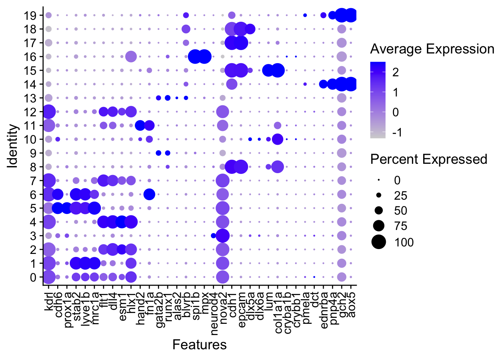
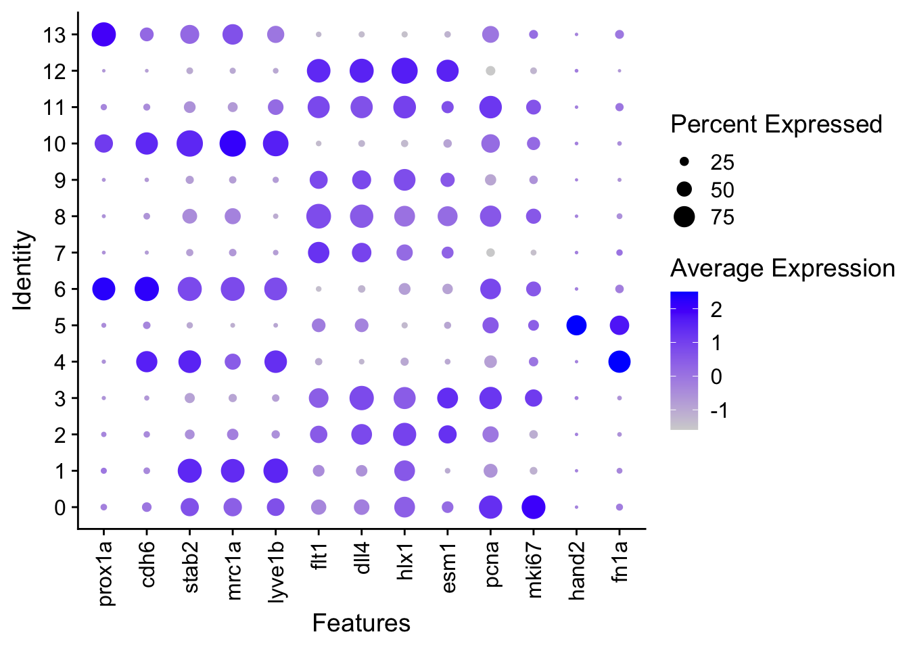
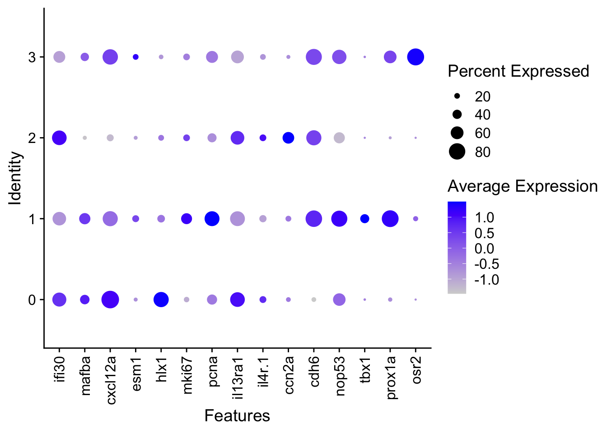

Last updated: 2026-02-09
Checks: 7 0
Knit directory: yap1_meox1_paper/
This reproducible R Markdown analysis was created with workflowr (version 1.7.1). The Checks tab describes the reproducibility checks that were applied when the results were created. The Past versions tab lists the development history.
Great! Since the R Markdown file has been committed to the Git repository, you know the exact version of the code that produced these results.
Great job! The global environment was empty. Objects defined in the global environment can affect the analysis in your R Markdown file in unknown ways. For reproduciblity it’s best to always run the code in an empty environment.
The command set.seed(20260119) was run prior to running
the code in the R Markdown file. Setting a seed ensures that any results
that rely on randomness, e.g. subsampling or permutations, are
reproducible.
Great job! Recording the operating system, R version, and package versions is critical for reproducibility.
Nice! There were no cached chunks for this analysis, so you can be confident that you successfully produced the results during this run.
Great job! Using relative paths to the files within your workflowr project makes it easier to run your code on other machines.
Great! You are using Git for version control. Tracking code development and connecting the code version to the results is critical for reproducibility.
The results in this page were generated with repository version 1cf7ec0. See the Past versions tab to see a history of the changes made to the R Markdown and HTML files.
Note that you need to be careful to ensure that all relevant files for
the analysis have been committed to Git prior to generating the results
(you can use wflow_publish or
wflow_git_commit). workflowr only checks the R Markdown
file, but you know if there are other scripts or data files that it
depends on. Below is the status of the Git repository when the results
were generated:
Ignored files:
Ignored: .DS_Store
Ignored: .Rhistory
Ignored: .Rproj.user/
Ignored: code/.DS_Store
Ignored: code/analysis/.DS_Store
Ignored: data/.DS_Store
Ignored: data/genesets/
Ignored: data/input/
Ignored: output/.DS_Store
Ignored: output/analysis/
Ignored: output/data/
Ignored: output/figures/
Ignored: renv/library/
Ignored: renv/staging/
Untracked files:
Untracked: analysis/figures_yap1_dataset.Rmd
Untracked: code/analysis/D10025_yap1_dataset/D10025_yap1_dataset_analysis_degs.R
Untracked: code/analysis/D10025_yap1_dataset/D10025_yap1_dataset_analysis_degs_EXPLOREONLY.R
Untracked: code/analysis/D10025_yap1_dataset/D10025_yap1_dataset_analysis_enrichr.R
Untracked: code/analysis/D10025_yap1_dataset/D10025_yap1_dataset_analysis_markers.R
Untracked: code/analysis/D10051_meox1_dataset/
Untracked: code/general_scripts/
Untracked: code/pre_processing/
Unstaged changes:
Deleted: code/analysis/D10025_yap1_dataset/DEGs/D10025_yap1_dataset_analysis_degs.R
Modified: renv.lock
Note that any generated files, e.g. HTML, png, CSS, etc., are not included in this status report because it is ok for generated content to have uncommitted changes.
These are the previous versions of the repository in which changes were
made to the R Markdown
(analysis/pre_processing_D10051_meox1_dataset_paper_annotations_allLevels.Rmd)
and HTML
(docs/pre_processing_D10051_meox1_dataset_paper_annotations_allLevels.html)
files. If you’ve configured a remote Git repository (see
?wflow_git_remote), click on the hyperlinks in the table
below to view the files as they were in that past version.
| File | Version | Author | Date | Message |
|---|---|---|---|---|
| Rmd | 1cf7ec0 | Michelle Meier | 2026-02-09 | wflow_publish(c("~/OneDrive - Peter Mac/HOGAN_LAB/analysis/yap1_meox1_paper/analysis/pre_processing_D10051_meox1_dataset_paper_annotations_allLevels.Rmd", |
| html | 8d75d01 | Michelle Meier | 2026-02-08 | Build site. |
| Rmd | aeb4fa5 | Michelle Meier | 2026-02-08 | wflow_publish(c("analysis/pre_processing_D10025_yap1_dataset_paper_annotations_allLevels.Rmd", |
Formal annotation of all Levels using marker genes and scGate scores (for Level 01 only)
suppressPackageStartupMessages({
library(tidyverse)
library(here)
library(Seurat)
library(scDblFinder)
library(ggpubr)
library(clustree)
library(patchwork)
library(scater)
library(scran)
library(qs2)
})Warning: package 'scDblFinder' was built under R version 4.5.1Warning: package 'SingleCellExperiment' was built under R version 4.5.1Warning: package 'SummarizedExperiment' was built under R version 4.5.1Warning: package 'MatrixGenerics' was built under R version 4.5.1Warning: package 'GenomicRanges' was built under R version 4.5.2Warning: package 'BiocGenerics' was built under R version 4.5.1Warning: package 'S4Vectors' was built under R version 4.5.1Warning: package 'IRanges' was built under R version 4.5.1Warning: package 'Seqinfo' was built under R version 4.5.1Warning: package 'Biobase' was built under R version 4.5.1Warning: package 'scuttle' was built under R version 4.5.1Warning: package 'scran' was built under R version 4.5.1source(here("code/general_scripts/yap1_meox1_important_genes.R"))Level 01 object contains scGate information. This is the scGate model used:
endothelial_gating_model <- gating_model(name = "endothelial", signature = c("kdrl+",
"col1a1a-",
"epcam-",
"gata2b-",
"myod1-"))level_01 <- qs_read(here('output/data/Datsets/D10051_meox1_dataset/D10051_meox1_dataset_Level_01_stringent_annotated.qs2'))
level_02 <- qs_read(here('output/data/Datsets/D10051_meox1_dataset/D10051_meox1_dataset_Level_02_stringent_annotated.qs2')) #ignore annotations in here and replace
level_03 <- qs_read(here('output/data/Datsets/D10051_meox1_dataset/D10051_meox1_dataset_Level_03_stringent.qs2'))plot_sizing <- theme_bw()+ theme(axis.title = element_text(size = 16),
axis.text = element_text(size = 14, colour = "black"),
plot.title = element_text(size = 18),
legend.text = element_text(size = 14),
legend.title = element_blank())
plot_sizing_seurat <- theme(axis.title = element_text(size = 16),
axis.text = element_text(size = 14, colour = "black"),
plot.title = element_text(size = 18),
legend.text = element_text(size = 14))
rotate_x <- theme(axis.text.x = element_text(angle = 90, vjust = 0.5, hjust=1))
strip_fix <- theme(strip.background = element_rect(fill = "white"),
strip.text = element_text(size = 14))Resolution 0.5
level_01$RNA_snn_res.0.5 %>% table().
0 1 2 3 4 5 6 7 8 9 10 11 12 13 14 15
1666 1518 1359 1013 955 681 577 553 543 520 469 427 374 232 211 171
16 17 18 19
126 96 91 82 level_01@meta.data %>%
group_by(RNA_snn_res.0.5,is_endothlial, .drop= FALSE) %>%
summarise(., count =n()) %>%
group_by(RNA_snn_res.0.5, .drop= FALSE) %>%
mutate(., purity= count/sum(count)) %>%
filter(is_endothlial == "Pure") %>%
select(., RNA_snn_res.0.5, purity)`summarise()` has grouped output by 'RNA_snn_res.0.5'. You can override using
the `.groups` argument.# A tibble: 20 × 2
# Groups: RNA_snn_res.0.5 [20]
RNA_snn_res.0.5 purity
<fct> <dbl>
1 0 0.999
2 1 1
3 2 1
4 3 0.172
5 4 1
6 5 0.916
7 6 1
8 7 1
9 8 0.0350
10 9 0.0538
11 10 0.132
12 11 1
13 12 1
14 13 0.224
15 14 0.00948
16 15 0
17 16 0.0159
18 17 0.0104
19 18 0
20 19 0.134 DotPlot(object = level_01, features = level_01_annotation_genes, group.by = "RNA_snn_res.0.5") + rotate_x
| Version | Author | Date |
|---|---|---|
| 8d75d01 | Michelle Meier | 2026-02-08 |
celltype
level_01$L1_celltype <- case_when(
level_01$RNA_snn_res.0.5 %in% c(0, 1,2, 4, 5,6,7,12) ~ "Endothelial",
level_01$RNA_snn_res.0.5 == 11 ~ "Endocardium",
level_01$RNA_snn_res.0.5 %in% c(17,18) ~ "Epithelial",
level_01$RNA_snn_res.0.5 == 3 ~ "Neuronal",
level_01$RNA_snn_res.0.5 == 9 ~ "Hematopoietic",
level_01$RNA_snn_res.0.5 %in% c(14, 19) ~ "Chromatophore",
level_01$RNA_snn_res.0.5 %in% c(8, 10, 15) ~ "Epithelial_Fibroblast",
level_01$RNA_snn_res.0.5 == 16 ~ "Immune",
level_01$RNA_snn_res.0.5 == 13 ~ "Hematopoietic_Erythrocyte"
)cluster_id
names <- c(
'Endothelial_01',
'Endothelial_02',
'Endothelial_03',
'Neuronal_01',
'Endothelial_04',
'Endothelial_05',
'Endothelial_06',
'Endothelial_07',
'Epithelial_Fibroblast_01',
'Hematopoietic_01',
'Epithelial_Fibroblast_02',
'Endocardium_01',
'Endothelial_08',
'Hematopoietic_Erythrocyte_01',
'Chromatophore_01',
'Epithelial_Fibroblast_03',
'Immune_01',
'Epithelial_01',
'Epithelial_02',
'Chromatophore_02'
)
level_01 <- SetIdent(level_01, value="RNA_snn_res.0.5")
names(names) <- levels(level_01)
level_01 <- RenameIdents(level_01, names)
level_01 <- AddMetaData(
object=level_01,
metadata=level_01@active.ident,
col.name="L1_cluster_id")filename <- here('output/data/Datsets/paper/D10051_meox1_dataset_Level_01_annotated.qs2')
qs_save(object = level_01, file = filename)Resolution 0.3
level_02$RNA_snn_res.0.3 %>% table().
0 1 2 3 4 5 6 7 8 9 10 11 12 13
1481 1393 1190 1067 494 413 384 353 341 278 225 212 200 79 DotPlot(object = level_02, features = level_02_annotation_genes, group.by = "RNA_snn_res.0.3") + rotate_x
| Version | Author | Date |
|---|---|---|
| 8d75d01 | Michelle Meier | 2026-02-08 |
celltype
level_02$L2_celltype <- case_when(
level_02$RNA_snn_res.0.3 %in% c(2, 9,12, 7,3,8,11) ~ "AEC",
level_02$RNA_snn_res.0.3 %in% c(1,4) ~ "VEC",
level_02$RNA_snn_res.0.3 == 0 ~ "cycling_EC",
level_02$RNA_snn_res.0.3 %in% c(6,10, 13) ~ "LEC",
level_02$RNA_snn_res.0.3 == 5 ~ "Endocardium"
)cluster_id
names <- c(
'cycling_EC_01',
'VEC_01',
'AEC_01',
'AEC_02',
'VEC_02',
'Endocardium_01',
'LEC_01',
'AEC_03',
'AEC_04',
'AEC_05',
'LEC_02',
'AEC_06',
'AEC_07',
'LEC_03'
)
level_02 <- SetIdent(level_02, value="RNA_snn_res.0.3")
names(names) <- levels(level_02)
level_02 <- RenameIdents(level_02, names)
level_02 <- AddMetaData(
object=level_02,
metadata=level_02@active.ident,
col.name="L2_cluster_id")level_02@meta.data <- level_02@meta.data %>%
select(-c("L2_seurat_celltype"))filename <- here('output/data/Datsets/paper/D10051_meox1_dataset_Level_02_annotated.qs2')
qs_save(object = level_02, file = filename)Resolution 0.2
level_03$RNA_snn_res.0.2 %>% table().
0 1 2 3
1384 516 505 170 DotPlot(object = level_03, features = c(level_03_annotation_genes, "osr2"), group.by = "RNA_snn_res.0.2") + rotate_xWarning: Scaling data with a low number of groups may produce misleading
results
| Version | Author | Date |
|---|---|---|
| 8d75d01 | Michelle Meier | 2026-02-08 |
celltype
names <- c(
'mVEC',
'LEC',
'hmVEC',
'pre_muLEC'
)
level_03 <- SetIdent(level_03, value="RNA_snn_res.0.2")
names(names) <- levels(level_03)
level_03 <- RenameIdents(level_03, names)
level_03 <- AddMetaData(
object=level_03,
metadata=level_03@active.ident,
col.name="L3_celltype")cluster_id
names <- c(
'mVEC_01',
'LEC_01',
'hmVEC_01',
'pre_muLEC_01'
)
level_03 <- SetIdent(level_03, value="RNA_snn_res.0.2")
names(names) <- levels(level_03)
level_03 <- RenameIdents(level_03, names)
level_03 <- AddMetaData(
object=level_03,
metadata=level_03@active.ident,
col.name="L3_cluster_id")level_03@meta.data <- level_03@meta.data %>%
select(-c("L2_celltype", "L2_seurat_celltype"))filename <- here('output/data/Datsets/paper/D10051_meox1_dataset_Level_03_annotated.qs2')
qs_save(object = level_03, file = filename)
sessionInfo()R version 4.5.0 (2025-04-11)
Platform: aarch64-apple-darwin20
Running under: macOS Sequoia 15.7.3
Matrix products: default
BLAS: /Library/Frameworks/R.framework/Versions/4.5-arm64/Resources/lib/libRblas.0.dylib
LAPACK: /Library/Frameworks/R.framework/Versions/4.5-arm64/Resources/lib/libRlapack.dylib; LAPACK version 3.12.1
locale:
[1] en_US.UTF-8/en_US.UTF-8/en_US.UTF-8/C/en_US.UTF-8/en_US.UTF-8
time zone: Australia/Melbourne
tzcode source: internal
attached base packages:
[1] stats4 stats graphics grDevices datasets utils methods
[8] base
other attached packages:
[1] qs2_0.1.7 scran_1.38.0
[3] scater_1.38.0 scuttle_1.20.0
[5] patchwork_1.3.2 clustree_0.5.1
[7] ggraph_2.2.2 ggpubr_0.6.2
[9] scDblFinder_1.24.0 SingleCellExperiment_1.32.0
[11] SummarizedExperiment_1.40.0 Biobase_2.70.0
[13] GenomicRanges_1.62.1 Seqinfo_1.0.0
[15] IRanges_2.44.0 S4Vectors_0.48.0
[17] BiocGenerics_0.56.0 generics_0.1.4
[19] MatrixGenerics_1.22.0 matrixStats_1.5.0
[21] Seurat_5.4.0 SeuratObject_5.3.0
[23] sp_2.2-0 here_1.0.2
[25] lubridate_1.9.4 forcats_1.0.1
[27] stringr_1.5.1 dplyr_1.1.4
[29] purrr_1.2.1 readr_2.1.6
[31] tidyr_1.3.2 tibble_3.3.1
[33] ggplot2_4.0.1 tidyverse_2.0.0
[35] workflowr_1.7.1
loaded via a namespace (and not attached):
[1] fs_1.6.6 spatstat.sparse_3.1-0 bitops_1.0-9
[4] httr_1.4.7 RColorBrewer_1.1-3 tools_4.5.0
[7] sctransform_0.4.3 backports_1.5.0 utf8_1.2.6
[10] R6_2.6.1 lazyeval_0.2.2 uwot_0.2.4
[13] withr_3.0.2 gridExtra_2.3 progressr_0.18.0
[16] cli_3.6.5 spatstat.explore_3.7-0 fastDummies_1.7.5
[19] labeling_0.4.3 sass_0.4.10 S7_0.2.1
[22] spatstat.data_3.1-9 ggridges_0.5.7 pbapply_1.7-4
[25] Rsamtools_2.26.0 parallelly_1.46.1 limma_3.66.0
[28] rstudioapi_0.17.1 BiocIO_1.20.0 ica_1.0-3
[31] spatstat.random_3.4-4 car_3.1-3 Matrix_1.7-3
[34] ggbeeswarm_0.7.3 abind_1.4-8 lifecycle_1.0.4
[37] whisker_0.4.1 yaml_2.3.10 edgeR_4.8.2
[40] carData_3.0-5 SparseArray_1.10.8 Rtsne_0.17
[43] grid_4.5.0 promises_1.5.0 dqrng_0.4.1
[46] crayon_1.5.3 miniUI_0.1.2 lattice_0.22-6
[49] beachmat_2.26.0 cowplot_1.2.0 cigarillo_1.0.0
[52] pillar_1.11.1 knitr_1.50 metapod_1.18.0
[55] rjson_0.2.23 xgboost_3.1.3.1 future.apply_1.20.1
[58] codetools_0.2-20 glue_1.8.0 getPass_0.2-4
[61] spatstat.univar_3.1-6 data.table_1.18.0 vctrs_0.6.5
[64] png_0.1-8 spam_2.11-3 gtable_0.3.6
[67] cachem_1.1.0 xfun_0.52 S4Arrays_1.10.1
[70] mime_0.13 tidygraph_1.3.1 survival_3.8-3
[73] statmod_1.5.1 bluster_1.20.0 fitdistrplus_1.2-5
[76] ROCR_1.0-11 nlme_3.1-168 RcppAnnoy_0.0.23
[79] GenomeInfoDb_1.46.2 rprojroot_2.1.1 bslib_0.9.0
[82] irlba_2.3.5.1 vipor_0.4.7 KernSmooth_2.23-26
[85] otel_0.2.0 tidyselect_1.2.1 processx_3.8.6
[88] compiler_4.5.0 curl_7.0.0 git2r_0.36.2
[91] BiocNeighbors_2.4.0 DelayedArray_0.36.0 plotly_4.11.0
[94] stringfish_0.18.0 rtracklayer_1.70.1 scales_1.4.0
[97] lmtest_0.9-40 callr_3.7.6 digest_0.6.37
[100] goftest_1.2-3 spatstat.utils_3.2-1 rmarkdown_2.29
[103] XVector_0.50.0 htmltools_0.5.8.1 pkgconfig_2.0.3
[106] fastmap_1.2.0 rlang_1.1.6 htmlwidgets_1.6.4
[109] UCSC.utils_1.6.1 shiny_1.12.1 farver_2.1.2
[112] jquerylib_0.1.4 zoo_1.8-15 jsonlite_2.0.0
[115] BiocParallel_1.44.0 BiocSingular_1.26.1 RCurl_1.98-1.17
[118] magrittr_2.0.3 Formula_1.2-5 dotCall64_1.2
[121] Rcpp_1.0.14 viridis_0.6.5 reticulate_1.44.1
[124] stringi_1.8.7 MASS_7.3-65 plyr_1.8.9
[127] parallel_4.5.0 listenv_0.10.0 ggrepel_0.9.6
[130] deldir_2.0-4 graphlayouts_1.2.2 Biostrings_2.78.0
[133] splines_4.5.0 tensor_1.5.1 hms_1.1.4
[136] locfit_1.5-9.12 ps_1.9.1 igraph_2.2.1
[139] spatstat.geom_3.7-0 ggsignif_0.6.4 RcppHNSW_0.6.0
[142] reshape2_1.4.5 ScaledMatrix_1.18.0 XML_3.99-0.20
[145] evaluate_1.0.5 RcppParallel_5.1.11-1 renv_1.1.4
[148] BiocManager_1.30.27 tweenr_2.0.3 tzdb_0.5.0
[151] httpuv_1.6.16 RANN_2.6.2 polyclip_1.10-7
[154] future_1.69.0 scattermore_1.2 ggforce_0.5.0
[157] rsvd_1.0.5 broom_1.0.11 xtable_1.8-4
[160] restfulr_0.0.16 RSpectra_0.16-2 rstatix_0.7.3
[163] later_1.4.2 viridisLite_0.4.2 memoise_2.0.1
[166] beeswarm_0.4.0 GenomicAlignments_1.46.0 cluster_2.1.8.1
[169] timechange_0.3.0 globals_0.18.0